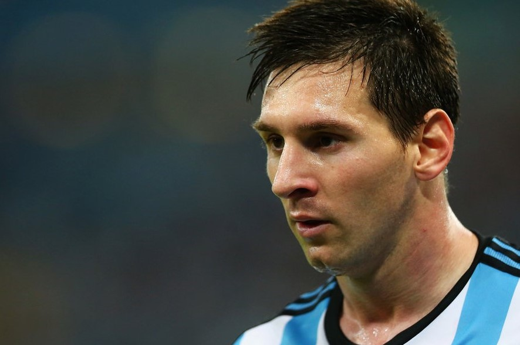

| Свежие Новости | Разное | |
|---|---|---|
Орлов: «Кокорин – талантливый и сильный футболист для России, но для Италии…» |
 Лионель МессиМесси начал заниматься футболом в пять лет в любительском клубе «Грандоли». В 1995 году в возрасте восьми лет он стал играть за первый профессиональный клуб «Ньюэллс Олд Бойз». В 13 лет Лионель подписал контракт с «Барселоной». Три года Месси выступал за вторую и третью команды каталонцев, а в 2003 году в 16-летнем возрасте сыграл первый матч за основной состав. За 19 лет в «Барселоне» Месси выиграл девять чемпионатов Испании, шесть Кубков и восемь Суперкубков Испании. Четыре кубка Лиги чемпионов, три Суперкубка УЕФА, три клубных чемпионата мира. Со сборной Аргентины Месси выиграл Олимпийские игры в 2008 году и Молодежный чемпионат мира в 2005-м. Месси – пятикратный обладатель «Золотой бутсы» и пятикратный обладатель «Золотого мяча». Лионель 11 раз становился лучшим игроком года в Аргентине и пять раз – лучшим бомбардиром Лиги чемпионов. Месси – лучший бомбардир в истории сборной Аргентины с 65 голами. Входит в список 50 лучших футболистов Лиги чемпионов УЕФА за последние 20 лет и в состав символической сборной Аргентины всех времен. |
|
Дзюба в топ-10 игроков Европы, которые могут стать свободными агентами |
||
| Манчини: «Рано или поздно я бы выиграл с «Интером» Лигу чемпионов» |
||
| «Челси» активировал пункт продления контракта с Жиру, а также нацелился на Мертенса |
Матчи сегодня:1)Смолевичи - Динамо Минск (Белоруссия) 2)Неман - Энергетик-БГУ (Белоруссия) 3)Локомотив Памир - Хатлон (Таджикистан) 4)Худжанд - Регар-ТадАЗ (Таджикистан) 5)Наполи - Барселона (Лига чемпионов) 6)Лацио - Болонья (Лига чемпионов) 7)Ахмат - Краснодар (Россия) |
|
| «Флорентино Перес всё ещё мечтает подписать Неймара» - бывший агент игрока |
||
| Вальверде – о Месси: «Он чувствует ответственность не только за игру, но и за клуб» |
||
«Боруссия» намерена предложить Санчо новый контракт |
||
Мюллер: «Хочу, чтобы люди говорили: «Чувак, это же Мюллер, он после 30 лет смог снова выиграть Лигу чемпионов» |
||
Худяков: «Если после майских праздников пандемия пойдёт на спад, то при пустых трибунах можно смело играть» |